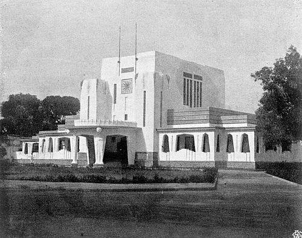
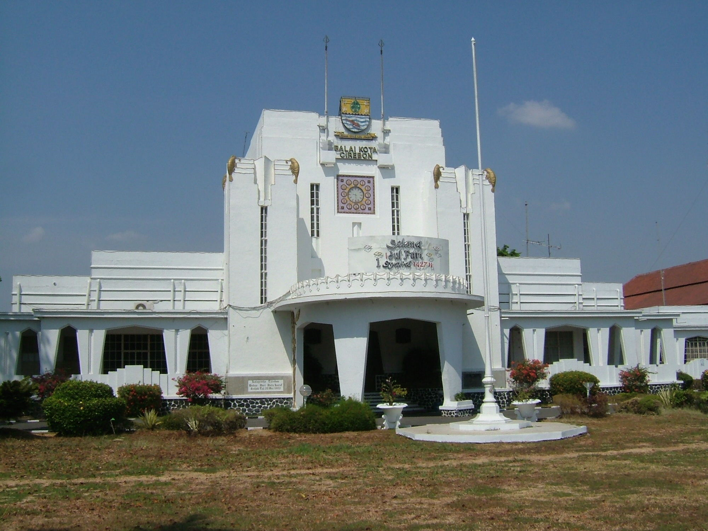
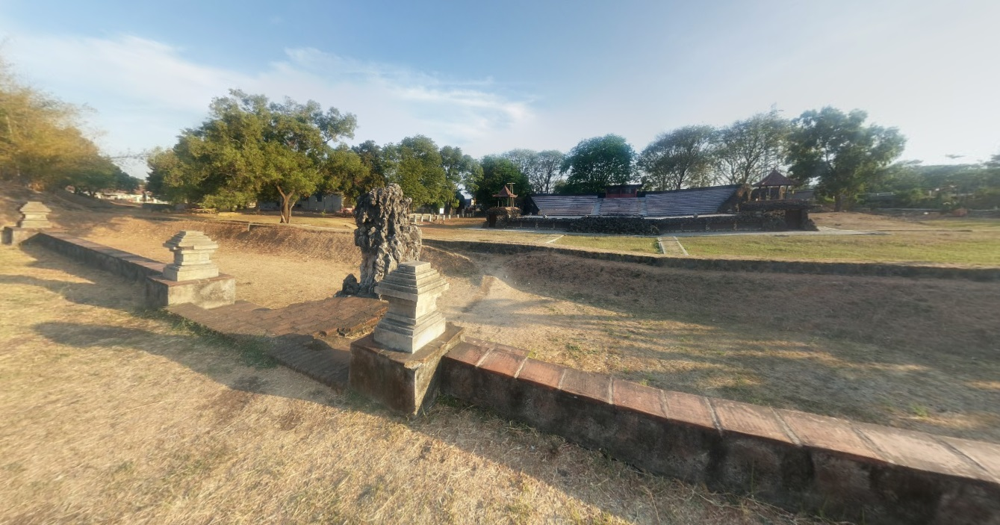
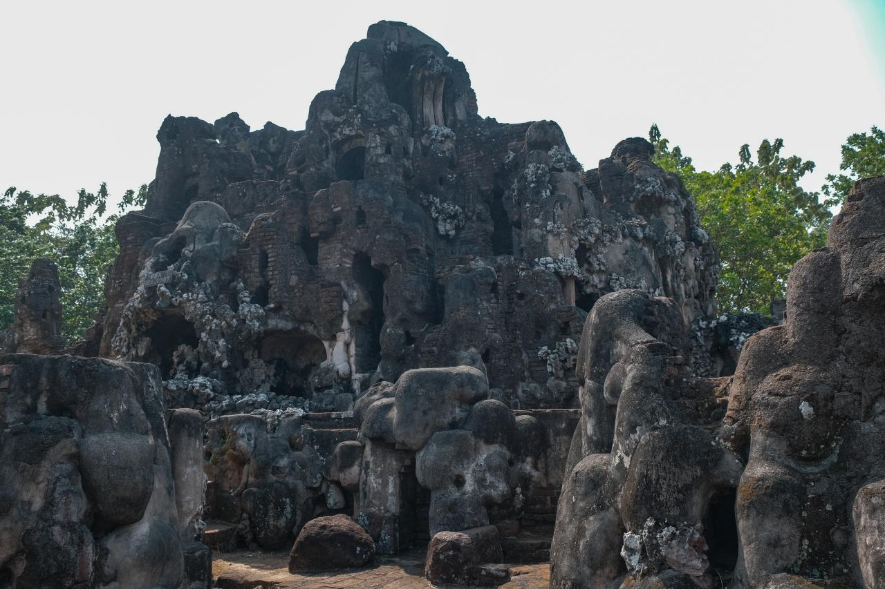
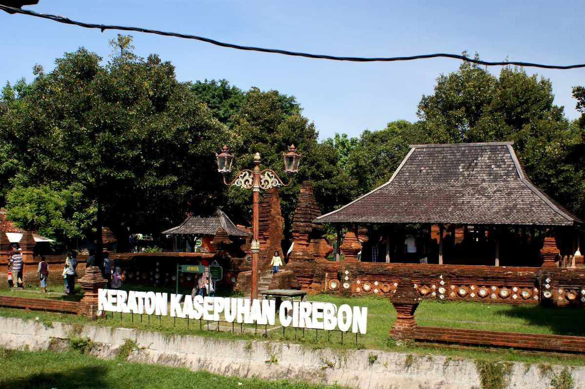
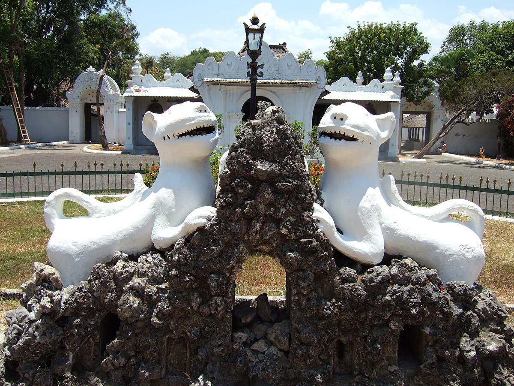
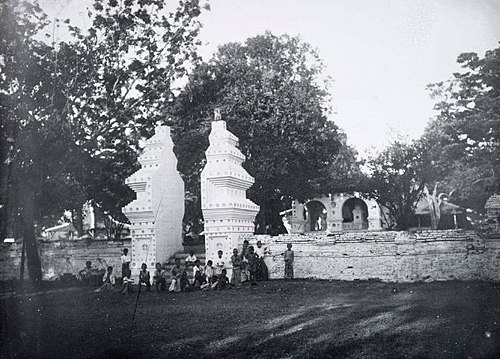
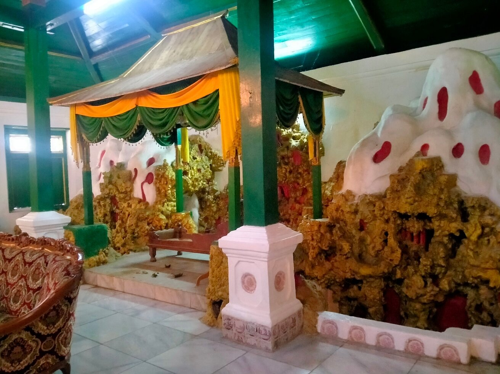
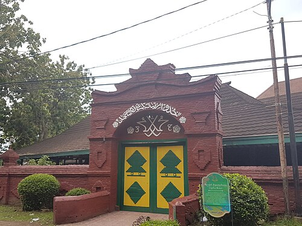
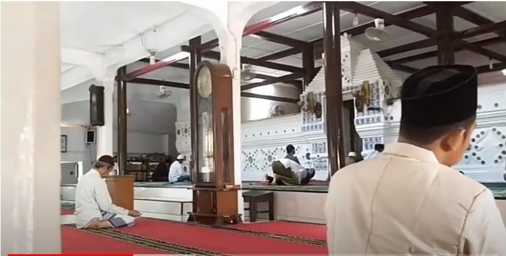

Dilansir dari https://id.wikipedia.org/wiki/Balai_Kota_Cirebon
Kota Cirebon adalah salah satu kota yang berada di provinsi Jawa Barat, Indonesia. Kota ini berada di pesisir utara Pulau Jawa yang menghubungkan Jakarta dengan Surabaya antara lintas tengah dan utara Jawa. Pada tahun 2024, jumlah penduduk kota Cirebon sebanyak 356.629 jiwa, dengan kepadatan 9.036 jiwa/km2. Pada awalnya Cirebon berasal dari kata sarumban, Cirebon adalah sebuah dukuh kecil yang dibangun oleh Ki Gedeng Tapa. Lama-kelamaan Cirebon berkembang menjadi sebuah desa yang ramai yang kemudian diberi nama Caruban (carub dalam bahasa Jawa artinya bersatu padu). Diberi nama demikian karena di sana bercampur para pendatang dari beraneka bangsa di antaranya Jawa, Sunda, Tionghoa, dan unsur-unsur budaya bangsa Arab), agama, bahasa, dan adat istiadat. kemudian pelafalan kata caruban berubah lagi menjadi carbon dan kemudian cirebon. Selain karena faktor penamaan tempat penyebutan kata cirebon juga dikarenakan sejak awal mata pencaharian sebagian besar masyarakat adalah nelayan, maka berkembanglah pekerjaan menangkap ikan dan rebon (udang kecil) di sepanjang pantai, serta pembuatan terasi, petis dan garam. Dari istilah air bekas pembuatan terasi yang terbuat dari sisa pengolahan udang rebon inilah berkembang sebutan cai-rebon (bahasa Sunda: air rebon), yang kemudian menjadi cirebon.


Dilansir dari https://id.wikipedia.org/wiki/Taman_Sari_Gua_Sunyaragi
Sejarah berdirinya gua Sunyaragi memiliki dua buah versi, yang pertama adalah berita lisan tentang sejarah berdirinya Gua Sunyaragi yang disampaikan secara turun-temurun oleh para bangsawan Cirebon atau keturunan keraton. Versi tersebut lebih dikenal dengan sebutan versi Carub Kanda. Versi yang kedua adalah versi Caruban Nagari yaitu berdasarkan buku Purwaka Caruban Nagari tulisan tangan Pangeran Kararangen atau Pangeran Arya Carbon tahun 1720. Sejarah berdirinya gua Sunyaragi versi Caruban Nagari adalah yang digunakan sebagai acuan para pemandu wisata gua Sunyaragi. Menurut versi ini, Gua Sunyaragi didirikan tahun 1703 Masehi oleh Pangeran Kararangen, cicit Sunan Gunung Jati. Kompleks Sunyaragi lalu beberapa kali mengalami perombakan dan perbaikan. Menurut Caruban Kandha dan beberapa catatan dari Keraton Kasepuhan, Tamansari dibangun karena Pesanggrahan Giri Nur Sapta Rengga berubah fungsi menjadi tempat pemakaman raja-raja Cirebon, yang sekarang dikenal sebagai Astana Gunung Jati. Hal itu dihubungkan dengan perluasan Keraton Pakungwati (sekarang Keraton Kasepuhan Cirebon) yang terjadi pada tahun 1529 M, dengan pembangunan tembok keliling keraton, Siti Inggil, dan lain-lain. Sebagai data perbandingan, Siti Inggil dibangun dengan ditandai candrasengkala Benteng Tinataan Bata yang menunjuk angka tahun 1529 M.


Dilansir dari https://www.kompas.com/stori/read/2021/07/01/150000779/sejarah-keraton-kasepuhan-cirebon
Keraton Pakungwati adalah cikal bakal Keraton Kasepuhan. Nama Pakungwati berasal dari nama Ratu Dewi Pakungwati binti Pangeran Cakrabuana yang menikah dengan Sunan Gunung Jati. Pada 1529, cicit Sunan Gunung Jati yang bernama Pangeran Mas Zainul Arifin atau Panembahan Pakungwati I membangun keraton baru di sebelah barat daya keraton lama. Keraton baru ini dinamai Keraton Pakungwati, mengabadikan nama Ratu Dewi Pakungwati. Sejarah Keraton Kasepuhan berkaitan dengan runtuhnya Kerajaan Cirebon yang dimulai pada 1666, pada masa pemerintahan Panembahan Ratu II atau Pangeran Rasmi. Pada saat itu, Sultan Amangkurat I, penguasa Mataram yang juga mertua Panembahan Ratu II, memanggil menantunya tersebut ke Surakarta dan menuduhnya telah bersekongkol dengan Banten untuk menjatuhkan kekuasaannya di Mataram. Setelah Panembahan Ratu II diasingkan dan wafat di Surakarta pada 1667, kekosongan dalam Kerajaan Cirebon diambil alih oleh Mataram. Pengambilalihan sepihak ini memicu amarah dari Sultan Ageng Tirtayasa yang berkuasa di Banten. Sultan Ageng Tirtayasa kemudian turun tangan untuk membebaskan dua putra Panembahan Ratu II yang juga diasingkan oleh Mataram, yaitu Pangeran Kartawijaya dan Pangeran Martawijaya. Pada 1677, terjadi konflik internal di Kesultanan Cirebon karena perbedaan pendapat di kalangan keluarga mengenai penerus kerajaan. Oleh karena itu, Sultan Ageng Tirtayasa memutuskan untuk membagi Kesultanan Cirebon menjadi tiga, yaitu Kesultanan Kanoman, Kesultanan Kasepuhan, dan Panembahan Cirebon. Kesultanan Kanoman dipimpin oleh Pangeran Kartawijaya yang bergelar Sultan Anom I, Kesultanan Kasepuhan diberikan kepada Pangeran Martawijaya yang bergelar Sultan Sepuh I, dan Pangeran Wangsakerta menjadi panembahan di Cirebon. Sejak saat itu, Sultan Sepuh I menempati Keraton Pakungwati yang kemudian berganti nama menjadi Keraton Kasepuhan.


Dilansir dari https://id.wikipedia.org/wiki/Keraton_Kanoman
Keraton Kanoman adalah salah satu dari dua bangunan kesultanan Cirebon, setelah berdiri keraton Kanoman pada tahun 1678 M kesultanan Cirebon terdiri dari keraton Kasepuhan dan keraton Kanoman. Kebesaran Islam di Jawa bagian barat tidak lepas dari Cirebon. Sunan Gunung Jati adalah orang yang bertanggung jawab menyebarkan agama Islam di Jawa Barat, sehingga berbicara tentang Cirebon tidak akan lepas dari sosok Syarif Hidayatullah atau Sunan Gunung Jati. Keraton Kanoman didirikan oleh Pangeran Mohamad Badridin atau Pangeran Kertawijaya, yang bergelar Sultan Anom I pada sekitar tahun 1678 M. Keraton Kanoman masih taat memegang adat-istiadat dan pepakem, di antaranya melaksanakan tradisi Grebeg Syawal,seminggu setelah Idul Fitri dan berziarah ke makam leluhur, Sunan Gunung Jati di Desa Astana, Cirebon Utara. Peninggalan-peninggalan bersejarah di Keraton Kanoman erat kaitannya dengan syiar agama Islam yang giat dilakukan Sunan Gunung Jati, yang juga dikenal dengan Syarif Hidayatullah.


Dilansir dari https://id.wikipedia.org/wiki/Masjid_Agung_Sang_Cipta_Rasa_Cirebon
Konon, masjid ini adalah salah masjid tertua di Cirebon, yaitu dibangun sekitar tahun 1480 Masehi atau semasa dengan Wali Songo menyebarkan agama Islam di tanah Jawa. Nama masjid ini diambil dari kata "sang" yang bermakna keagungan, "cipta" yang berarti dibangun, dan "rasa" yang berarti digunakan. Ide awal pembangunan masjid ini muncul dari istri Sunan Gunung Jati, Nyi Mas Ratu Pakungwati.. Pada waktu itu, hanya ada satu masjid kecil di Cirebon, yakni Tajug Pejlagrahan. Namun, seiring banyaknya masyarakat Cirebon yang memeluk Islam, Nyi Mas Ratu Pakungwati menyadari perlunya bangunan yang lebih besar untuk menampung jamaah. Kemudian, pembangunan masjid dimulai pada tahun 1480. Bahan fondasi masjid menggunakan kayu jati dari daerah Jatitujuh, perbatasan Majalengka-Indramayu.[2] Menurut tradisi, pembangunan masjid ini dikabarkan melibatkan sekitar lima ratus orang yang didatangkan dari Majapahit, Demak, dan Cirebon sendiri. Dalam pembangunannya, Sunan Gunung Jati menunjuk Sunan Kalijaga sebagai arsiteknya. Selain itu, Sunan Gunung Jati juga memboyong Raden Sepat, arsitek Majapahit yang menjadi tawanan perang Demak-Majapahit, untuk membantu Sunan Kalijaga merancang bangunan masjid tersebut.